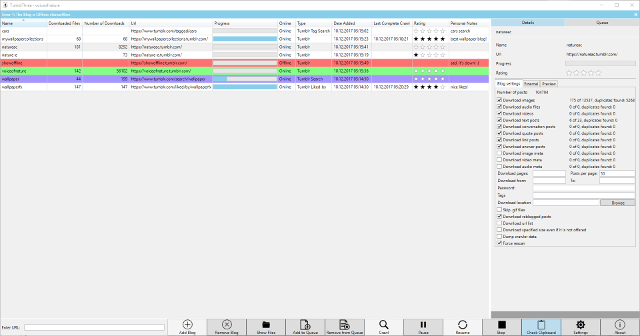

TumblThree - A Tumblr Backup Application
TumblThree is the code rewrite of TumblTwo, a free and open source Tumblr blog backup application, using C# with WPF and the MVVM pattern. It uses the Win Application Framework (WAF). It downloads photo, video, audio and text posts from a given tumblr blog.
Screenshots:

Features:
- Source code at github (Written in C# using WPF and MVVM).
- Multiple concurrent downloads of a single blog.
- Multiple concurrent downloads of different blogs.
- Internationalization support (currently available: en, de, es, fr, ru, zh).
- A download queue.
- Autosave of the queuelist.
- Save, clear and restore the queuelist.
- A clipboard monitor that detects blogname.tumblr.com urls in the clipboard (copy and paste) and automatically adds the blog to the bloglist.
- A settings panel (change download location, turn preview off/on, define number of concurrent downloads, set the imagesize of downloaded pictures, set download defaults, enable portable mode, etc.).
- Uses Windows proxy settings.
- A bandwidth throttler.
- An option to download an url list instead of the actual files.
- Set a start time for a automatic download (e.g. during nights).
- An option to skip the download of a file if it has already been downloaded before in any currently added blog.
- Uses SSL connections.
- Preview of photos & videos.
- Taskbar buttons and key bindings.
Blog backup/download:
- Download of photo, video (only tumblr.com hosted), text, audio, quote, conversation, link and question posts.
- Download meta information for photo, video and audio posts.
- Downloads inlined photos and videos (e.g. photos embedded in question&answer posts).
- Download of all image sizes possible (SVC, API only for newer blogs, higher resolution not possible for old blogs *1).
- Support for downloading Imgur, Gfycat, Webmshare, Mixtape, Lolisafe, Uguu, Catbox and SafeMoe linked files in tumblr posts.
- Download of safe mode/NSFW blogs.
- Allows to download only original content of the blog and skip reblogged posts.
- Can download only tagged posts.
- Can download only specific blog pages instead of the whole blog.
- Allows to download blog posts in a defined time span.
- Can download hidden blogs (login required / dash board blogs).
- Can download password protected blogs (of non-hidden blogs).
Liked/by backup/download:
- A downloader for downloading “liked by” photos and videos instead of a tumblr blog (e.g. https://www.tumblr.com/liked/by/wallpaperfx/) (login required).
- Download of all image sizes possible (SVC, API only for newer blogs, higher resolution not possible for old blogs *1).
- Allows to download posts in a defined time span.
Tumblr search backup/download:
- A downloader for downloading photos and videos from the tumblr search (e.g. http://www.tumblr.com/search/my+keywords).
- Download of all image sizes possible (SVC, API only for newer blogs, higher resolution not possible for old blogs *1).
- Can download only specific blog pages instead of the whole blog.
Tumblr tag search backup/download:
- A downloader for downloading photos and videos from the tumblr tag search (e.g. http://www.tumblr.com/tagged/my+keywords) (login required).
- Download of all image sizes possible (SVC, API only for newer blogs, higher resolution not possible for old blogs *1).
- Allows to download posts in a defined time span.
*1 Tumblr raw image files are inaccessible as of August 10, 2018
Program Usage:
- Extract the .zip file and run the application by double clicking TumblThree.exe.
- Copy the url of any tumblr.com blog you want to backup from into the textbox at the bottom left. Afterwards, click on ‘Add Blog’ on the right side of it.
- Alternatively, if you copy (ctrl-c) a tumblr.com blog url from the address bar/text file, the clipboard monitor from TumblThree will detect it and automatically add the blog.
- To start the download process, click on ‘Crawl’. The application will regularly check for (new) blogs in the queue and start processing them, until you stop the application by pressing ‘Stop’. So, you can either add blogs to the queue via ‘Add to Queue’ or double click/drag’n’drop first and then click ‘Crawl’, or you start the download process first and add blogs to the queue afterwards.
- A light blue bar left to the blog in the queue indicates a actively downloading blog.
- The blog manager on the left side also indicates the state of each blog. A red background shows an offline blog, a green background an actively crawling blog and a purple background an enqueued blog.
- You change the download location, the number of concurrent connections, the default backup settings for each newly added blog and various other settings in the ‘Settings’.
- In the Details window you can view statistics of your blog and set blog specific options. You can here what kind of post type (photo, video, audio, text, conversation, quote, link) to download.
- For downloading only tagged posts, you’ll have to do some steps:
- Add the blog url.
- Open the blog in the details tab, enter the tags in the Tags textbox in a comma separated list without the leading hash (#) sign. E.g. great big car,bears would search for images that are tagged for either a great big car or bears or both.
- For downloading password protected blogs, you’ll have to do some steps:
- Add the blog url.
- Open the blog in the details tab, enter the password in the Password textbox.
- For downloading hidden blogs (login required blogs), you have to do some steps:
- Go to Settings, click on the Connection tab and fill in your tumblr email address (login) and password, then click the Authenticate button. If the login was successfully, the label will change and display your email address. The email address and password are not stored locally on disk but cookies are generated and saved in
%LOCALAPPDATA%\\TumblThree in json format.
- Add the blog url.
- For downloading liked photos and videos, you’ll have to do some steps:
- Go to Settings, click on the Connection tab and fill in your tumblr email address (login) and password, then click the Authenticate button. If the login was successfully, the label will change and display your email address. The email address and password are not stored locally on disk but cookies are generated and saved in
%LOCALAPPDATA%\\TumblThree in json format.
- Add the blog url including the liked/by string in the url (e.g. https://www.tumblr.com/liked/by/wallpaperfx/).
- For downloading your own likes, make sure you’ve (temporarily) enabled the following options in your blogs settings (i.e. https://www.tumblr.com/settings/blog/yourblogname):
- Likes -> Share posts you like (to enable the publicly visible liked/by page)
- Visibility -> blog is explicit (to see/download NSFW likes)
- For downloading photos and videos from the tumblr search, you’ll have to do some steps:
- Add the search url including your key words separated by plus signs (+) in the url (e.g. https://www.tumblr.com/search/my+special+tags).
- For downloading photos and videos from the tumblr tag search, you’ll have to do some steps:
- Go to Settings, click on the Connection tab and fill in your tumblr email address (login) and password, then click the Authenticate button. If the login was successfully, the label will change and display your email address. The email address and password are not stored locally on disk but cookies are generated and saved in
%LOCALAPPDATA%\\TumblThree in json format.
- Add the search url including your tags separated by plus signs (+) in the url (e.g. https://www.tumblr.com/tagged/my+special+tags).
Getting Started:
The default settings should cover most users. You should only have to change the download location and the kind of posts you want to download. For this, in the Settings (click on the Settings button in the lower panel of the main user interface) you might want to change:
- General -> Download location: Specifies where to download the files. The default is in a folder Blogs relative to the TumblThree.exe
- Blog -> Settings applied to each blog upon addition:
- Here you can set what posts newly added blogs will download per default. To change what each blog downloads, click on a blog in the main interface, select the Details Tab on the right and change the settings. This separation allows to download different kind of post for different blogs. You can change the download settings for multiple existing blogs by selecting them with shift+left click for a range or ctrl-a for all of them.
- Note: You might want to always select:
- Download Reblogged posts: Downloads reblogs, not just original content of the blog author.
Settings you might want to change if the download speed is not satisfactory:
- Connection -> Concurrent connections: Specifies the number of connections used for downloading posts. The number is shared between all actively downloading blogs.
- Connection -> Concurrent video connections: Specifies the number of connections used for downloading tumblr video posts. The vt.tumblr.com host regularly closes connections if the number is too high. Thus, the maximum number of vt.tumblr.com connections can be specified here independently.
- Connection -> Concurrent blogs: Number of blogs to download in parallel.
Most likely you don’t have to change any of the other connection settings. In particular, settings you should never change, unless you’re sure you know what you are doing:
- Connection -> Limit Tumblr Api Connections: Leave this checkbox checked and do not change the corresponding values of 90 connections per 60 seconds. If you still change them, you might end up with offline blogs or missing downloads.
Further Insights:
- Note: All the following files are stored in json format and can be opened in any editor.
- Application settings are stored in
C:\\Users\\Username\\AppData\\Local\\TumblThree\\.
- You can use the portable mode (settings->general) to stores the application settings in the same folder as the executable.
- For each blog there is also a database (serialized class) file in the Index folder of the download location named after the blogname.tumblr. Here blog relative information is stored like what files have been downloaded, the url of the blog and when it was added. This allows you to move your downloaded files (photos, videos, audio files) to a different location without interfering with the download process.
- Some settings aren’t hooked up to the graphical user interface. It’s possible to view all TumblThree settings by opening the settings.json in any editor located in
C:\\Users\\Username\\AppData\\Local\\TumblThree\\. Their names should be self explainatory. Some notable settings to further fine tune the application include:
- BufferSize: Allows to set the buffer size for downloading binary files (photos, videos) in multiples of 4KB. The default is 2MB, thus the BufferSize has a value of 512. Increasing this value reduces disk fragmentation as more of the file is kept in the memory before it gets written out to the disk but increases the memory usage.
- MaxNumberOfRetries: Sets the maximum number of retries if a tumblr server forcefully closes the connection. This might regularly happen on the tumblr video host (vt.tumblr.com) if too many connections were opened in parallel. After the limit is exhausted, the file is left truncated, but is also not registered as a successful downloaded. Thus, the file can be resumed in the next crawl.
For questions and more information:
For questions, bug reports and feature requests go to our
Issues section.
Further information can also be found in the
TumblThree Wiki.
Download:
{kind=link}